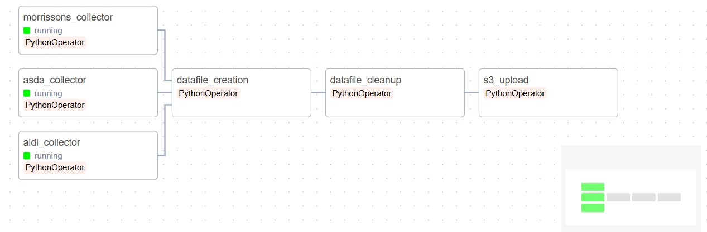
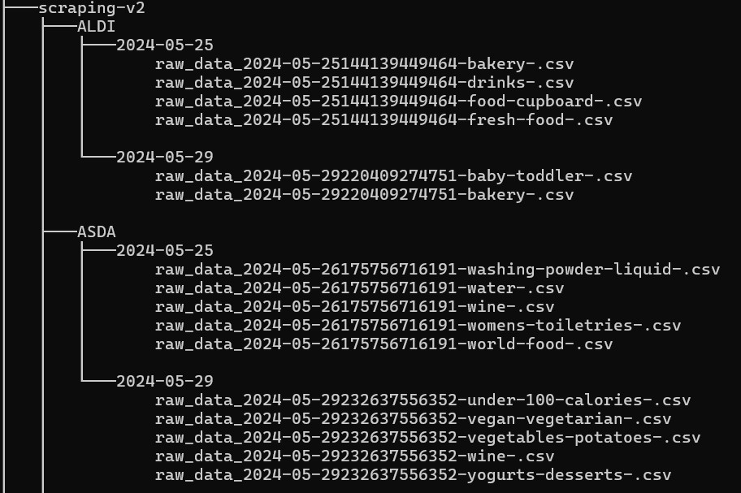
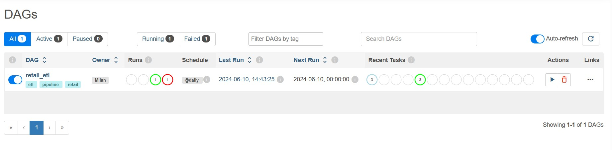
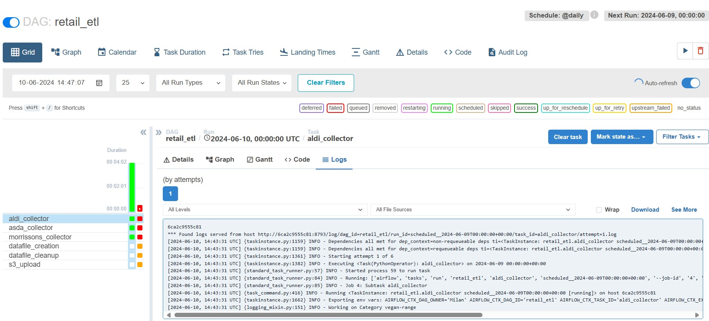

Building a Scalable Retail Data Extraction Pipeline
In the ever-evolving retail industry, having access to real-time data is crucial for making informed decisions. This project aims to build a scalable data extraction pipeline that scrapes retail data from multiple stores, processes and cleans it, and ultimately stores it for analysis. By tracking changing grocery prices over time, this project helps in monitoring inflation trends, understanding market dynamics, and making data-driven decisions. Accurate and up-to-date retail data can provide valuable insights for both consumers and businesses, helping to identify pricing trends, competitive positioning, and economic shifts.
To achieve this, we leverage a combination of powerful technologies. Selenium is used for web scraping, Python and Pandas for data processing and cleaning, and Apache Airflow for pipeline orchestration. Containerization with Docker ensures portability, while deployment on AWS services such as Amazon S3, ECR, and EC2 guarantees scalability and reliability. This blog post will walk you through each step of the project, from data scraping to deployment, and address challenges such as IP blocking by retailers.
Prerequisites
- Basic Knowledge of Python: Understanding of Python programming, including libraries such as Pandas and Selenium.
- Familiarity with Web Scraping: Basic knowledge of web scraping techniques and tools.
- Understanding of Docker: Basic knowledge of Docker for containerization.
- Experience with Cloud Services:
- Amazon S3 for storage.
- Amazon ECR for Docker image registry.
- DigitalOcean for deployment.
- Apache Airflow Knowledge: Understanding of Apache Airflow for orchestrating data pipelines.
- Development Environment:
- Python installed on your machine.
- Docker installed and running.
- AWS CLI configured with your AWS account.
- An IDE or text editor for coding (e.g., VS Code, PyCharm).
- Accounts and Subscriptions:
- AWS account with appropriate permissions for S3 and ECR.
- DigitalOcean account for deployment.
- Any necessary proxy or VPN services for overcoming IP blocking issues.
Project Structure
The full pipeline we will be building is shown below.
The full codebase for the process can be checked from Github, a template config file is also provided in which security credentials need to be updated to run the code. The program runs using docker and should work by using docker-compose commands.
The github link for the project is here.
A well-structured project is crucial for several reasons:
- Readability and Maintainability: A clear and logical structure makes it easier for developers to understand and navigate the codebase. This is especially important for onboarding new team members and for long-term maintenance.
- Scalability: As the project grows, a well-organized structure allows for easy addition of new features and modules without causing clutter or confusion.
- Collaboration: A consistent structure helps multiple developers work together efficiently, as they can easily find and understand different parts of the project.
- Debugging and Testing: A modular structure allows for easier testing and debugging. It’s simpler to isolate and fix issues when the code is organized logically.
Next, we look at how the project directory is setup according to best practices.
- commons/:Contains config related files.
- dags/: Houses the Directed Acyclic Graphs (DAGs) for Apache Airflow, defining pipelines, including tasks and their dependencies.
- data-loading/: Responsible for scripts and modules related to loading data into the database, we currently do not load to any database, instead just save the files to Amazon S3.
- data_collector/: Dedicated to the data scraping logic, where data is collected from different retail websites.
- data_utils/: Contains utility functions and helper scripts for processing and manipulating data.
- docs/: Meant for documentation, including guides, API documentation, and other resources to help developers understand and use the project.
- retail-metadata/: Stores metadata information about the retailers, such as mappings, brand data and other reference data.
- s3_utils/: Contains scripts and modules for interacting with Amazon S3, such as uploading and downloading files.
- static_vars/: Holds static variables and configuration settings that are used throughout the project. For instance, names of stores used.
- temp/: Used for temporary files and data during the execution of the project, excluded from version control.
- transforms/: Contains scripts and modules for transforming and cleaning data as part of the ETL (Extract, Transform, Load) process.
- .gitignore: Specifies which files and directories should be ignored by Git, helping to keep the repository clean from unnecessary files.
- airflow.env: Contains configuration settings for running Apache Airflow.
- docker-compose.yml: Defines services, networks, and volumes for Docker Compose, enabling multi-container Docker applications.
- Dockerfile: Contains instructions for building a Docker image for the project.
- Dockerfile.chrome, Dockerfile.firefox: Specific Dockerfiles for creating images with Chrome and Firefox browsers, for Selenium web scraping.
- Dockerfile.postgres, Dockerfile.redis: Dockerfiles for creating images for PostgreSQL and Redis, used by airflow.
- README.md: Provides an overview of the project, including instructions on how to set up and use it.
- requirements.txt: Lists the Python dependencies needed for the project.
- server-docker-compose.yml: An additional Docker Compose file, for setting up server-side services.
- __init__.py: Indicates that the directory should be treated as a Python package.
Data Scraping with Selenium
Data scraping is the major component of our pipeline, focusing on extracting retail data from selected stores: Morrisons, Aldi, and Asda.
Store Selection and Website Layouts
We chose Morrisons, Aldi, and Asda for their comprehensive product offerings and varying website layouts, which present unique challenges and opportunities for data scraping.
- Morrisons:
- Products are loaded dynamically as you scroll.
- We select a category, scroll to the bottom of the page using Selenium, and scrape all product boxes.
- Aldi and Asda:
- These stores follow a similar layout with a paginated approach per category.
- Each category has multiple pages, and we iterate through each page, downloading the content within the product boxes.
Scraping Process
- Define Categories:
We begin by defining a list of categories to scrape for each store.
- Scraping Aldi and Asda:
For each category, we navigate through multiple pages. On each page, we extract the content within the product boxes.
- Scraping Morrisons:
We select a category and use Selenium to scroll to the bottom of the page. Once all products are loaded, we scrape the content within the product boxes.
Data Handling
After collecting the data from both scrapers, we consolidate the information into a Pandas DataFrame. This data is then written to separate CSV files for further processing and analysis.
Code Structure
All scraper codes are designed to be independent of each other, following Object-Oriented Programming (OOP) principles. This approach allows us to reuse common functions, such as setting up the browser for Selenium, ensuring modularity and ease of maintenance.
Saving Data to Files
Defining a file structure is crucial when implementing a scraper. Care must be taken to not fill up too much memory when scraping data, a natural checkpoint must be identified to save data on incremental basis. We choose this checkpoint as a product category for each store. Additionally, it is better to make the scraper recovery proof meaning, the entire dataset does not get lost in case the scraper crashes. We follow the below best practices in order to overcome these challenges.
- Each category's data is saved to a different file to avoid taking up too much RAM and to ensure data is not lost if the scraper crashes.
- When starting the scraper, the output folder is checked for category data that has already been scraped. If data for a category is found, that category is skipped. This mechanism is in place to save duplicate work and ensure efficiency if the scraper crashes and needs to be restarted.
- The output format for each category can vary, but a CSV file is always written.
- The category names can differ for each store, accommodating the unique categorizations used by Morrisons, Aldi, and Asda.
The output structure of the scraping directory is shown in the below image.
Data Integration with Pandas
This transformation is designed to take the retail data we have scraped from three different stores—Morrisons, Aldi, and Asda—and merge it into one comprehensive file. This combined data file makes it easier to analyze and compare prices and other product details across different stores.
Purpose
The main purpose of this script is to:
- Consolidate data from multiple sources into a single, uniform format.
- Facilitate easier data analysis by having all the information in one place.
- Ensure that the data from different stores can be compared directly.
Challenges in Integration
- Different Data Formats:
Each store may present its data differently. For example, Morrisons might use different column names or units of measurement compared to Aldi and Asda.
Solution: The script renames and standardizes columns so that the data from all three stores has the same structure.
- Data Integrity and Consistency:
Ensuring that the data remains accurate and consistent when combining it from different sources.
Solution: The script adds common columns like
scrape_dateandStorenameto keep track of where and when the data was collected. It also handles missing values and differences in column names. - Handling Missing Data:
Some stores might not have certain data fields, such as ratings or promotions.
Solution: The script fills in missing data with empty values where necessary, ensuring that the final dataset remains consistent.
- Efficiency and Performance:
Combining large datasets can be resource-intensive.
Solution: The script processes each store's data separately and then merges them, which helps manage memory usage and keeps the process efficient.
How the Script Works
- Reading Data:
The script reads the data files from each store's directory for a given date. It adds additional columns like
scrape_dateandStorenameto each dataset. - Standardizing Data:
The script standardizes the column names across all datasets. For example, it ensures that the price per unit of measure is consistently named.
- Combining Data:
The script merges the standardized data from all three stores into one DataFrame. It then saves this combined data into a CSV file, which can be easily used for further analysis.
Data Cleanup
This transformation is designed to clean and standardize the combined data file created from the retail data of Morrisons, Aldi, and Asda. The goal is to ensure that the data is accurate, consistent, and ready for analysis. The cleanup process involves various steps to normalize pricing, standardize units of measurement, identify product brands, and create unique identifiers for each product.
Purpose
The main purpose of this script is to:
- Clean and standardize the combined data from multiple sources.
- Ensure consistency in the data for easier analysis.
- Add additional useful information, such as product brands and unique identifiers.
Cleanups Applied
- Inconsistent Price Formats:
Prices may be represented differently across the datasets.
Solution: The
cleanup_pricefunction standardizes price formats by removing currency symbols and converting values to a uniform float format. - Different Volume Units:
Volumes may be listed in various units (e.g., kg, g, ml).
Solution: The
standardize_volume_tuplefunction converts different volume strings to standardized units (e.g., kg, l) and returns them as a tuple. - Cleaning Product Names:
Product names may contain volume information or other inconsistencies.
Solution: The
clean_product_namefunction removes volume information from product names to standardize them. - Brand Identification:
Identifying the brand of a product can be challenging due to variations in product names.
Solution: The
add_brandfunction checks product names against a list of known brands and marks products accordingly. - Creating Unique Identifiers:
Each product needs a unique identifier for tracking and analysis.
Solution: The
create_fingerprintfunction generates a unique fingerprint for each product based on its name, store, and volume.
How the Script Works
- Reading and Cleaning Data:
The script reads the combined data file created from Morrisons, Aldi, and Asda. It cleans the data by standardizing prices and volumes, and by cleaning product names.
- Identifying Brands:
The script uses a pre-defined list of brands to identify and mark brands in the product names.
- Creating Unique Identifiers:
It generates unique fingerprints for each product to ensure that each entry can be uniquely identified.
- Saving Cleaned Data:
The cleaned and standardized data is saved to a new CSV file, making it ready for analysis.
Saving Data to Amazon S3
The last step in the pipeline is to upload the cleaned file to Amazon S3, a cloud storage service. The main functions of the script include connecting to S3, creating a bucket if it doesn't already exist, and uploading files to the specified bucket.
Key Functions
- Connecting to S3:
The
connect_to_s3function sets up a connection to Amazon S3 using the provided access credentials. This connection allows the script to interact with S3, such as uploading or checking for files. - Creating a Bucket:
The
create_bucket_if_not_existfunction checks if a specified bucket (a storage container in S3) exists. If the bucket does not exist, it creates one. If it already exists, it simply confirms its existence. - Uploading Files:
The
upload_to_s3function uploads a file to the specified bucket in S3. It places the file in a 'raw' folder within the bucket and provides feedback on whether the upload was successful or if the file was not found. - Uploading Cleaned Files:
The
upload_clean_file_to_s3function is designed to be used in a workflow (e.g., with Apache Airflow). It retrieves the path of a cleaned data file, connects to S3, ensures the bucket exists, and uploads the file to S3.
Pipeline Orchestration with Apache Airflow
The Airflow pipeline is designed to automate the process of extracting, transforming, and loading (ETL) retail data from multiple stores (Morrisons, Aldi, and Asda) into Amazon S3. The pipeline runs daily and follows these main steps:
Common Settings
Each extraction task (aldi_extract, asda_extract, morrissons_extract) will retry up to 5 times with a 30-second delay between attempts in case of failure.
Steps in the Pipeline
- Extraction from Aldi:
The
aldi_extracttask uses thescrape_aldifunction to scrape data from the Aldi website. - Extraction from Asda:
The
asda_extracttask uses thescrape_asdafunction to scrape data from the Asda website. - Extraction from Morrisons:
The
morrissons_extracttask uses thescrape_morrissonsfunction to scrape data from the Morrisons website. - Data File Creation:
The
datafile_creationtask uses thecreate_datafilefunction to combine the extracted data from all three stores into a unified data file. It ensures that data from different sources is merged into a single file for further processing. - Data Cleanup:
The
datafile_cleanuptask uses thedata_cleanupfunction to clean and standardize the unified data file. This step ensures that the data is consistent, accurate, and ready for analysis by performing transformations such as price standardization and brand identification. - Upload to S3:
The
upload_s3task uses theupload_clean_file_to_s3function to upload the cleaned data file to Amazon S3. This step ensures that the cleaned data is stored in a secure and scalable cloud storage service.
Task Dependencies
The extraction tasks (morrissons_extract, asda_extract, aldi_extract) run in parallel to gather data from each store simultaneously.
Once all extraction tasks are completed, the datafile_creation task runs to create the unified data file.
After the data file is created, the datafile_cleanup task runs to clean the data.
Finally, the cleaned data file is uploaded to S3 by the upload_s3 task.
By automating these steps, the Airflow pipeline ensures that retail data is collected, processed, and stored efficiently on a daily basis, enabling timely and accurate data analysis.
Containerization with Docker
Components of the Setup
-
Airflow:
- Role: Manages the workflow of our data collection process, ensuring tasks are done in the right order and at the right time.
-
Selenium:
- Role: Automatically visits and extracts data from retail websites.
-
Python & Pandas:
- Role: Processes the collected data, cleaning and organizing it for analysis.
-
Docker:
- Role: Ensures our setup runs smoothly on any system by bundling all the necessary components together.
Containerized Services
We have several Docker containers, each responsible for a part of our system:
- Airflow Container: Runs the Airflow service which schedules and coordinates tasks.
- Browser Containers (Chrome & Firefox): Run Selenium to interact with websites, allowing us to use different browsers for data collection.
- Postgres Container: Stores our data in a structured way for easy retrieval and analysis.
- Redis Container: Acts as a cache to speed up certain operations.
How It Works
- Task Scheduling: Airflow schedules tasks and ensures they run in the right order. For example, it will first trigger Selenium to collect data and then move to data processing.
- Data Collection: Selenium, running in either Chrome or Firefox containers, visits retail websites and extracts data like prices, stock levels, etc.
- Data Storage: The collected data is sent to the Postgres container, where it is stored securely.
- Data Processing: Python scripts using Pandas run to clean and organize the data, making it ready for analysis.
- Caching: Redis helps speed up the process by storing frequently accessed data temporarily.
Benefits
- Consistency: Ensures tasks run in the same way every time.
- Scalability: Easy to add more tasks or scale up the system by adding more containers.
- Portability: Docker containers can run on any system, making deployment easy.
To further simplify management of docker, we use docker-compose, it greatly simplifies the docker lifecycle by providing helpful commands for handling containers. In this system, Docker Compose helps to streamline the deployment and orchestration of various services needed for our retail store data collection set up.
This setup ensures that we have a robust, scalable, and portable system for collecting and processing retail store data efficiently.
Docker Registry with Amazon ECR
1. Build the Images
First, use Docker Compose to build your images. This command reads the docker-compose.yml file and builds the images defined in it.
docker-compose build2. Create an IAM Role with ECR Permissions
Ensure you have an IAM role with the necessary permissions to access ECR. Attach this policy to a new or existing IAM role. Make sure your AWS CLI or EC2 instance is using this IAM role.
3. Log in to Your AWS Account
Ensure you have the AWS CLI installed and configured with your AWS credentials. Use the following command to log in to your AWS account:
aws configureYou will be prompted to enter your AWS Access Key, Secret Key, Region, and Output Format.
4. Create ECR Repositories
Create repositories in ECR for each of the Docker images. You can do this through the AWS Management Console or using the AWS CLI:
aws ecr create-repository --repository-name airflow
aws ecr create-repository --repository-name chrome
aws ecr create-repository --repository-name firefox
aws ecr create-repository --repository-name postgres
aws ecr create-repository --repository-name redis5. Authenticate Docker to Your ECR Registry
Use the AWS CLI to authenticate Docker to your ECR registry. Run the following command, which retrieves an authentication token and passes it to Docker:
aws ecr get-login-password --region <your-region> |
docker login --username AWS --password-stdin <aws_account_id>
.dkr.ecr.<your-region>.amazonaws.comReplace <your-region> with your AWS region and <aws_account_id> with your AWS account ID.
6. Tag the Docker Images
Tag each Docker image with the repository URI. This step is necessary to push the images to the correct repositories in ECR. For example:
docker tag airflow:latest <aws_account_id>.dkr.ecr.<your-region>.amazonaws.com/airflow:latest
docker tag chrome:latest <aws_account_id>.dkr.ecr.<your-region>.amazonaws.com/chrome:latest
docker tag firefox:latest <aws_account_id>.dkr.ecr.<your-region>.amazonaws.com/firefox:latest
docker tag postgres:latest <aws_account_id>.dkr.ecr.<your-region>.amazonaws.com/postgres:latest
docker tag redis:latest <aws_account_id>.dkr.ecr.<your-region>.amazonaws.com/redis:latestReplace <your-region> and <aws_account_id> accordingly.
7. Push the Docker Images to ECR
Finally, push the tagged Docker images to the respective ECR repositories:
docker push <aws_account_id>.dkr.ecr.<your-region>.amazonaws.com/airflow:latest
docker push <aws_account_id>.dkr.ecr.<your-region>.amazonaws.com/chrome:latest
docker push <aws_account_id>.dkr.ecr.<your-region>.amazonaws.com/firefox:latest
docker push <aws_account_id>.dkr.ecr.<your-region>.amazonaws.com/postgres:latest
docker push <aws_account_id>.dkr.ecr.<your-region>.amazonaws.com/redis:latestThe steps ensure your Docker images are built, tagged, and pushed to your AWS ECR repositories, making them available for deployment.
Deployment on Digital Ocean
1. Create an Account on DigitalOcean
If you don't already have an account, sign up for a new account on DigitalOcean.
2. Spin Up a Droplet
Create a new droplet (virtual server) on DigitalOcean. Choose the specifications according to your needs (CPU, memory, storage).
3. Set Up a Firewall
Before accessing your droplet, set up a firewall to control incoming traffic:
- Navigate to the "Networking" section in the DigitalOcean dashboard.
- Select "Firewalls" and create a new firewall.
- Add rules to allow necessary ports, such as:
- SSH: TCP 22
- HTTP: TCP 80 (if needed)
- HTTPS: TCP 443 (if needed)
- Airflow: TCP 8080
- Apply the firewall to your droplet.
4. Pull the Docker Images from ECR
Once the droplet is ready, connect to it via SSH. Use the following steps to pull the Docker images from AWS ECR:
- Install Docker:
sudo apt update sudo apt install docker.io -y sudo systemctl start docker sudo systemctl enable docker - Install Docker Compose:
sudo curl -L "https://github.com/docker/compose/releases/download/1.29.2/docker-compose- $(uname -s)-$(uname -m)" -o /usr/local/bin/docker-compose sudo chmod +x /usr/local/bin/docker-compose - Authenticate Docker to ECR:
aws ecr get-login-password --region <your-region> | docker login --username AWS --password-stdin <aws_account_id> .dkr.ecr.<your-region>.amazonaws.com
5. Use the Server Docker Compose File
Upload the server-docker-compose.yml file to the server using scp:
scp path/to/server-docker-compose.yml user@your_droplet_ip:/path/on/server6. Pull the Images
Navigate to the directory where you placed the server-docker-compose.yml file and pull the images:
cd /path/on/server
docker-compose -f server-docker-compose.yml pull7. Copy the Airflow Environment File to the Server
Use scp or any other file transfer method to copy the airflow.env file to your droplet:
scp path/to/airflow.env user@your_droplet_ip:/path/on/server8. Run Docker Compose to Start the Servers
Navigate to the directory where you placed the server-docker-compose.yml file and run Docker Compose:
cd /path/on/server
docker-compose -f server-docker-compose.yml up -d9. Access the Airflow Environment
After running Docker Compose, your Airflow environment will be accessible via the droplet's IP address on the configured port which is 8080 for us.
10. Copy the Commons Folder to the Server
We do not include the configs file to the docker image since they contain AWS keys among other credentials, we send the file to the server manually mounted as a volume.
Copy the commons folder, which contains configurations not included in the images, to the server using scp:
scp -r path/to/commons user@your_droplet_ip:/path/on/serverRunning the Pipeline
1. Access the Airflow Web Interface
After deploying your Airflow environment, access the Airflow web interface via the droplet's IP address and the configured port (default is usually port 8080). Open your web browser and go to:
http://your_droplet_ip:80802. Navigate to the DAGs Page
Once on the Airflow web interface, navigate to the "DAGs" page. This page lists all the available DAGs in your Airflow environment.
3. Select the Retail DAG
Find the DAG named "retail" in the list and click on it to view more details about this DAG.

4. Trigger the DAG
On the DAG details page, push the button on the top right corner labeled "Trigger DAG" to manually start the execution of the DAG.
Conclusion
In conclusion, building a scalable retail data extraction pipeline involves a multifaceted approach leveraging various technologies and methodologies. By integrating tools like Selenium for web scraping, Python and Pandas for data processing, and Apache Airflow for orchestrating tasks, the project ensures efficient data extraction and transformation. Docker and AWS services provide the necessary scalability and reliability, while strategic project structuring enhances maintainability and collaboration. Overcoming challenges such as IP blocking and data inconsistencies, the pipeline successfully consolidates and cleans retail data, enabling insightful analysis and decision-making. This comprehensive solution not only tracks grocery prices but also offers a robust framework adaptable to other data extraction needs, reinforcing the importance of real-time data in today's dynamic retail environment.